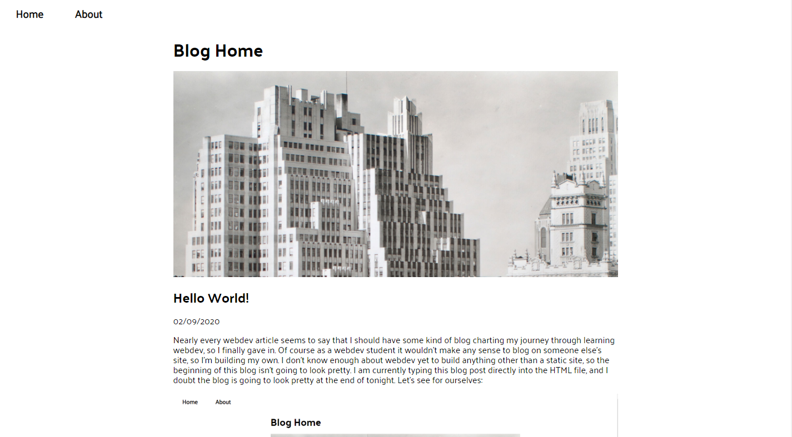

Hello World!
Nearly every webdev article seems to say that I should have some kind of blog charting my journey through learning webdev, so I finally gave in. Of course as a webdev student it wouldn't make any sense to blog on someone else's site, so I'm building my own. I don't know enough about webdev yet to build anything other than a static site, so the beginning of this blog isn't going to look pretty. I am currently typing this blog post directly into the HTML file, and I doubt the blog is going to look pretty at the end of tonight. Let's see for ourselves:
Not my best work! But I figured it was better to get into the practice of blogging frequently over waiting to build a site to the standards I'd like to. It should also be interesting to see the evolution of the blog site itself over time!
A little background on me: I started webdev as a hobby early last year as a way to cope with unemployment using Free Code Camp and various other online resources. A combination of running into a wall learning-wise and re-employment caused me to stray from the path shortly after I started learning React-Redux. It never really left my head, though, and in the fall of 2019 I applied to be in Lambda School and was accepted into the Web 28 cohort, starting in January.
It's been a whirlwind of a time since then, spending at least 8 hours a day nearly every day either learning or coding. I've just now officially finished the first unit, which means I officially owe them money, so I suppose there's no dropping out at this point! In all seriousness, it's been a great learning experience so far and I'd definitely give my recommendation to them. It's not for the faint of heart; the learning pace is breakneck and the material covered is challenging. But the community is extremely supportive and if you ask for help and connect with your peers, I have no doubt you too could make it in this program. I need to stop ranting and start building this blog site, so I'll leave it there for now. Here's hoping I make it past more than one post!